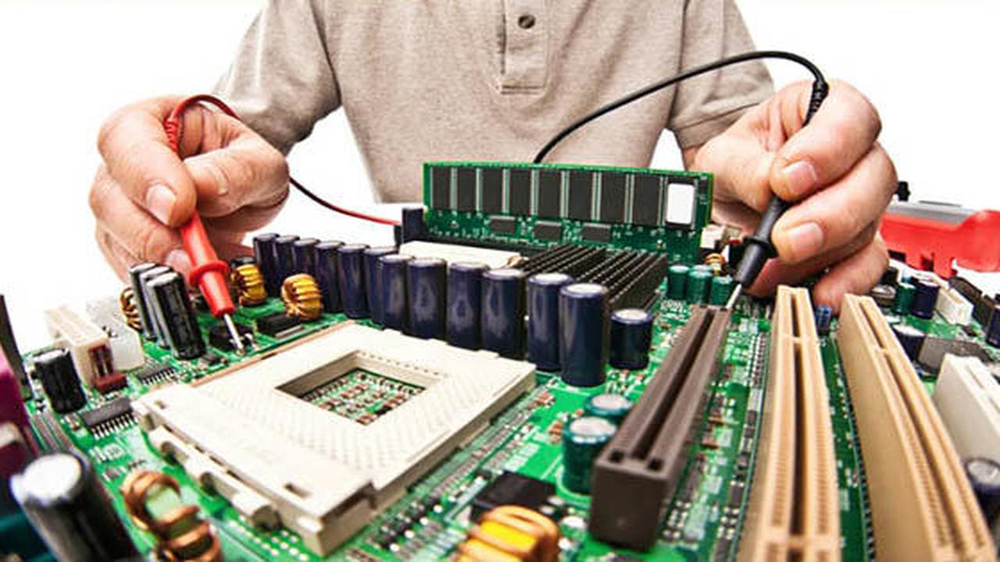
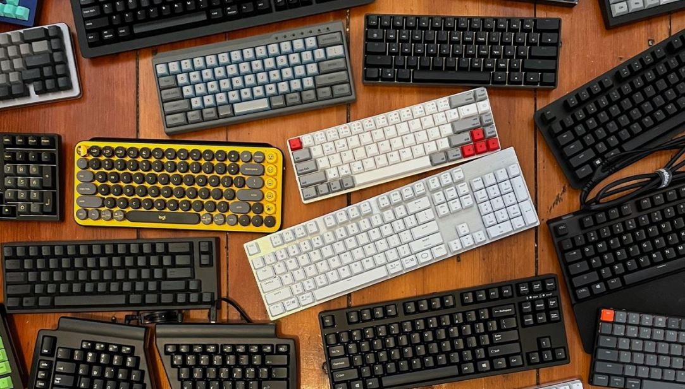
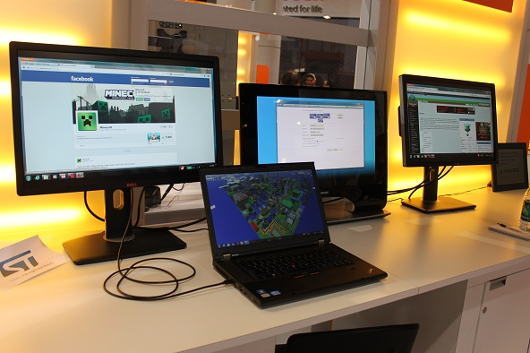

Tecno M2
"Descubre el Futuro Digital con Nuestra Tienda: Innovación, Calidad y Servicio Inigualables en Cada Producto".
Nuestros servicios
- Diagnóstico de problemas
- Reparación y reemplazo de componentes
- Instalación y actualización de software
- Limpieza y mantenimiento
- Asesoramiento y atención al cliente
Diagnóstico de problemas
Los técnicos revisan las computadoras para identificar cualquier problema o mal funcionamiento, ya sea hardware o software.
volver al indice
Reparación y reemplazo de componentes
Se llevan a cabo reparaciones en hardware dañado, como la sustitución de discos duros, tarjetas gráficas, memorias RAM u otros componentes defectuosos.
volver al indice
Instalación y actualización de software
Se instalan sistemas operativos, programas y aplicaciones según las necesidades del cliente. Además, se realizan actualizaciones de software para garantizar un rendimiento óptimo y la seguridad del equipo.
volver al indice
Limpieza y mantenimiento

Se lleva a cabo la limpieza física del hardware para eliminar el polvo y otros residuos que puedan afectar el rendimiento de la computadora. También se realiza mantenimiento preventivo para evitar futuros problemas.
volver al indice
Asesoramiento y atención al cliente

Los técnicos brindan asesoramiento personalizado a los clientes, respondiendo preguntas y ofreciendo recomendaciones sobre cómo mejorar el rendimiento y la seguridad de sus equipos. Además, proporcionan un servicio de atención al cliente para resolver cualquier duda o inquietud que puedan tener los clientes.
volver al indice
indice
Teclado
 ver videoExperimenta la precisión y la comodidad sin igual con nuestros teclados de alta calidad, diseñados para brindarte una experiencia de escritura fluida y ergonómica. Nuestros teclados ergonómicos ofrecen una experiencia de escritura precisa y fluida, gracias a su diseño ergonómico que reduce la fatiga y el estrés en tus manos y muñecas. Cada pulsación es cómoda y eficiente, lo que te permite trabajar durante horas sin molestias. Olvídate de la tensión en tus manos y muñecas con nuestros teclados ergonómicos, diseñados para adaptarse naturalmente a la forma de tu mano y reducir la fatiga durante largas sesiones de escritura. Realiza tus tareas con precisión y eficiencia gracias a la disposición ergonómica de nuestras teclas, que te permite escribir de forma rápida y precisa sin esfuerzo. Personaliza tu experiencia de escritura con nuestros teclados ergonómicos, que ofrecen una variedad de funciones y ajustes para adaptarse a tus preferencias individuales. Libérate de los cables y disfruta de la libertad de movimiento con nuestros teclados inalámbricos, que te permiten trabajar desde cualquier lugar de la habitación sin restricciones. Con su tecnología inalámbrica avanzada y su conexión estable, nuestros teclados inalámbricos te brindan una experiencia de escritura sin igual que te permite ser más productivo y creativo en cualquier momento y lugar. Disfruta de una libertad total de movimiento con nuestros teclados inalámbricos, que te permiten trabajar desde cualquier lugar de la habitación sin estar atado a un cable. Olvídate de los problemas de conexión y los retrasos molestos con nuestros teclados inalámbricos, que ofrecen una conexión estable y confiable en todo momento. Lleva tu teclado contigo a donde quiera que vayas y disfruta de una experiencia de escritura sin igual en cualquier lugar. Con su diseño compacto y liviano, nuestros teclados inalámbricos son perfectos para usar en la oficina, en casa o mientras viajas.
volver al indice
Mouse
ver videoNuestros mouse ergonómicos ofrecen precisión milimétrica y comodidad personalizada, adaptándose perfectamente a tu mano para reducir la fatiga durante largas sesiones. Además de su diseño elegante y moderno, destacan por su estilo y elegancia en cualquier espacio de trabajo. Por otro lado, nuestros mouse inalámbricos te brindan libertad total de movimiento, conectividad estable y portabilidad para usar en cualquier lugar. Con ellos, disfrutarás de una experiencia de navegación fluida y sin interrupciones, ya sea trabajando o jugando.

volver al indice
Monitor
 ver videoExperimenta la belleza de la claridad con nuestros monitores de alta resolución, que te transportan a un mundo de imágenes nítidas y detalladas. Desde la edición de fotos y videos hasta el entretenimiento multimedia, nuestros monitores te brindan una calidad visual excepcional que eleva tu experiencia informática a nuevas alturas. Sumérgete en imágenes asombrosamente detalladas gracias a la resolución ultra alta de nuestros monitores. Disfruta de una reproducción de color precisa y vibrante que hace que tus fotos, videos y juegos cobren vida con una intensidad sorprendente. Aumenta tu productividad con la amplia área de pantalla de nuestros monitores de alta resolución. Con más espacio para trabajar y multitareas, podrás realizar más tareas de manera eficiente y sin esfuerzo. Sumérgete en una experiencia visual envolvente con nuestros monitores curvos, que te transportan al corazón de la acción con su diseño innovador y envolvente. Inmersión Total: Sumérgete en tus juegos, películas y videos favoritos con una sensación de inmersión total que te transporta al centro de la acción. Minimiza la fatiga visual y el cansancio ocular con nuestros monitores curvos, que están diseñados para reducir la tensión en tus ojos durante largas sesiones de uso. Agrega un toque de estilo innovador a tu espacio de trabajo o entretenimiento con nuestros monitores curvos, que destacan por su diseño elegante y moderno.

volver al indice
Unidad de almacenamiento
 ver video
ver video
¡Experimenta la velocidad incomparable de los discos SSD y la confiabilidad tradicional de los discos duros convencionales, todo en un solo lugar! Con los discos SSD, disfrutarás de un rendimiento relámpago, fiabilidad sin precedentes, eficiencia energética y silencio absoluto. Por otro lado, los discos duros convencionales ofrecen almacenamiento masivo, compatibilidad universal y son ideales para almacenamiento a largo plazo. En nuestra tienda, encontrarás una amplia selección de ambos tipos de discos, garantizando que encuentres el producto perfecto para tus necesidades informáticas. ¡Hazte con el tuyo hoy y lleva tu experiencia informática al siguiente nivel!